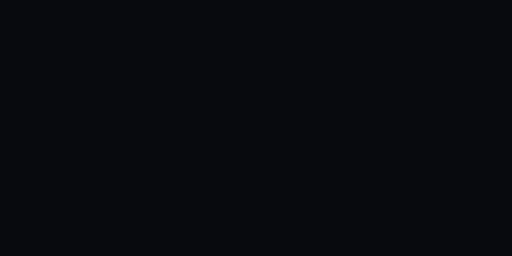
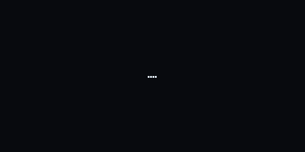

Arrow shoots in diagonally, P H / 2 6 slide in from the sides, banana drops and bounces, caption types out.
Diagonal reveal along the arrow's direction with a dithered leading edge, one-frame invert flash.
Pixels light up in pseudo-random order, then the screen blinks once.
Glyphs jump up one at a time with overshoot, banana falls and bounces, caption types with a cursor.

Old-TV power-on: dot → line → picture expands vertically from the center.